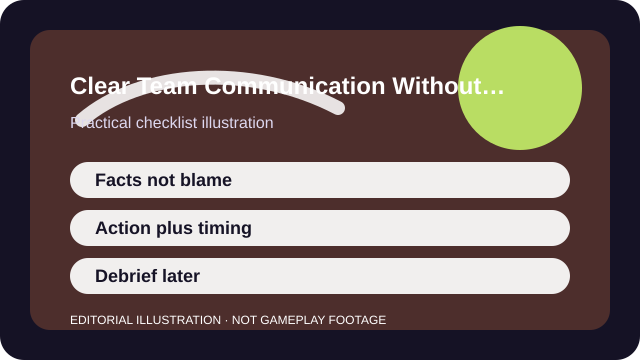

QUICK ANSWER
The short version
Say what changed, where it matters, and what action follows. If the call does not help the team act now, save it for downtime.
Most team communication problems are not about courage. They are about relevance. Players either say too little when action is needed or narrate everything, flooding the channel with details that no one can use in time.
Clear comms are usually short, factual, and tied to the next action. Good teams are not silent because they know everything already. They are concise because they respect how little attention is available during a live fight.

CHECKLIST
What to confirm before you change anything
- Agree on simple place names or use the game's official callout language if it exists.
- Decide who should call rotates, ult plans, or resets when several people notice the same thing.
- Use pings as backup, not as a replacement for every verbal call.
- Cut dead talk after you lose agency in the round unless the game specifically needs your information.
- Review communication problems after the fight, not in the middle of it.
The aim is not perfect language. It is a shared minimum structure that stops every fight from turning into five private monologues.
SCENARIO
When three teammates talk at once the instant the plan breaks
Chaos often begins when the team is already under pressure. One player calls damage, another calls a flank, a third complains that no one followed, and the only useful detail gets buried under urgency. The result feels like a communication failure even though everyone technically spoke up.
A better response is to cut the call into action-sized pieces: one enemy close left, rotate now, hold ult, back out. Those phrases are small enough to act on and short enough that another useful call can still fit after them.
PROCESS
A repeatable way to work through it
Call the change, not the whole story
Say what is different: one flank, one cooldown spent, one site open, one revive unsafe.
Pair information with intent
A good call often ends with what you want next: push, hold, back, trade, wait, rotate.
Hand off after death or loss of control
Once you are spectating, keep only the information the living players still need.
Debrief in the gap, not in the fire
Long explanations belong after the fight, when teammates can process them without dying for your timing.
The real test is whether your calls make teammates easier to predict. If the group starts moving earlier and second-guessing less, the language is probably becoming useful.
COMMON MISTAKES
What usually makes the problem worse
Blaming during the round
Emotion crowds out the exact information teammates need to recover or convert a fight.
Calling details with no decision attached
Damage numbers, ult percentages, or pathing notes matter only if they change the next action.
Talking after you lost agency
Dead players often over-narrate because they have more attention available than the people still alive.
SUCCESS CRITERIA
How to know the change actually worked
- Teammates react faster because the call already contains the next action.
- Important pings and short voice calls reinforce each other instead of competing.
- The group spends less time arguing about what happened in the middle of live rounds.
- You can tell when silence is better than another sentence.
The best communication often feels boring. That is a compliment. Predictable, compact calls free attention for aim, movement, and decision-making instead of stealing it.
SOURCES AND LIMITS
Where to verify live details
- Random teammates may not share language, patience, or interest in structured comms.
- Some games lean harder on ping systems than live voice, so the right balance varies.
- Accessibility or comfort needs can change whether speaking, pinging, or text is the better default.
Menu names, defaults, and device behavior can change after updates. Use the linked official support surfaces for the current live details and keep this guide for the process around them.